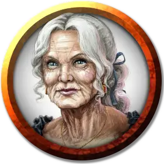

Хестер Барч
Hester Barch
Средний Гуманоид (Человек), законно-добрый, именной НИП

Класс Доспеха 10
Хиты 9 (2к8)
Скорость 30 футов
| мод | спас | ||
|---|---|---|---|
| СИЛ | 10 | +0 | +0 |
| ЛОВ | 10 | +0 | +0 |
| ТЕЛ | 10 | +0 | +0 |
| мод | спас | ||
|---|---|---|---|
| ИНТ | 10 | +0 | +0 |
| МДР | 14 | +2 | +2 |
| ХАР | 11 | +0 | +0 |
Навыки Медицина +4, Проницательность +4, Религия +2
Чувства пассивное Восприятие 12
Языки Общий
Опасность 1/4 (50 опыта)
Бонус мастерства +2
Особенности
Врождённая псионика (перезарядка после короткого или продолжительного отдыха). Хестер может накладывать заклинание обнаружение мыслей [detect thoughts] без потребности в соматических или материальных компонентах. Использовав эту особенность один раз, магистр должна совершить короткий или длительный отдых, прежде чем сможет использовать её снова. Базовая характеристика её заклинаний — Мудрость (Сл спасброска от заклинания 12).
Использование заклинаний. Хестер является заклинателем 1-го уровня. Его базовой характеристикой является Мудрость (Сл спасброска от заклинания 12, +4 к попаданию атаками заклинаниями). У него приготовлены следующие заклинания жреца:
• Заговоры (неограниченно): свет, священное пламя, чудотворство
• 1 уровень (3 ячейки): благословение, лечение ран, убежище
Действия
Дубина. . Рукопашная атака оружием: +2 к попаданию, досягаемость 5 футов, одна цель. Попадание: Дробящий урон 2 (1к4).
Описание
Магистр этого суда — Хестер Барч (женщина, турами), миниатюрная пожилая женщина. Магистру Барч семьдесят с хвостиком, она редко злится и любит рассказывать длинные воспитательные анекдоты и притчи. Никто, кроме ближайших друзей, не знает об этом, но у неё есть врождённая псионическая способность использовать заклинание обнаружение мыслей [detect thoughts] без потребности в соматических или материальных компонентах. Использовав эту способность один раз, магистр должна совершить короткий или длительный отдых, прежде чем сможет использовать её снова. Базовая характеристика её заклинаний — Мудрость (Сл спасброска от заклинания 12).
Магистр не желает удовлетворять просьбам личной встречи с Фенерусом, считая его сомнительной, нераскаявшейся личностью и опасным человеком.
Прислужник это младший представитель духовенства, обычно, помогающий священникам. Он выполняет в храме множество дел и получает от божества незначительные магические способности.